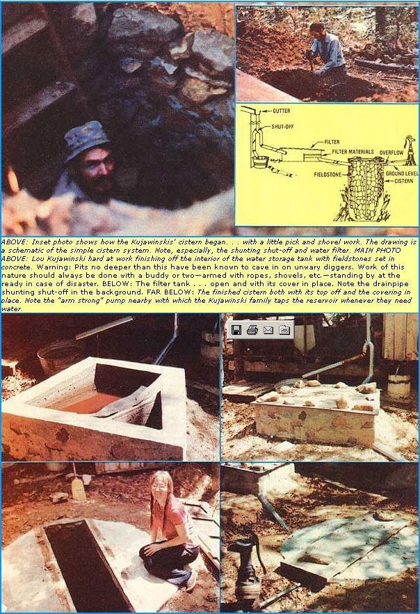
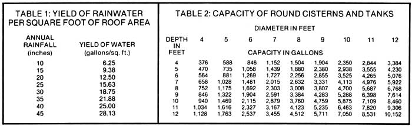

Whether your well has just gone dry and you need a new (and preferably low-cost) source of water . . . or that sprig you've been drawing from doesn't always produce as much as you (or your animals) would like . . . or you've grown tired of the taste of city water . . . you'll want to see what Penny and Lou Kujawinski (authors of the following article) have to say about collecting and storing rainwater for homestead use.
Have you ever looked at a pretty piece of land but hesitated to buy the property because it lacked water? (Quite often, an otherwise-attractive parcel of land that has no well, pond, stream, or spring will be priced so low that you may be tempted to buy the tract anyway.) Lack of ground water is a common problem . . . one that the folks in our part of Missouri-early settlers and present-day farmers alike-have learned to get around by the use of something known as a rainwater cistern .
A rainwater cistern is-as the name implies-simply a setup for collecting rainwater (usually the precipitation that falls on your home's or barn's roof) and storing it until it's needed in a (usually underground) concrete or masonry tank. Cisterns are ideal for farms and homesteads situated on waterless land, or for areas where the natural ground water is too hard-contains too many dissolved minerals-to drink, use for washing hair, etc. (Fact is, some of the people hereabouts who have good springs on their property have gone ahead and installed cisterns anyway, just because they prefer the taste of rainwater.)
We didn't feel out of place, then-upon moving to our present home-when we designed and constructed a simple rainwater-collection system large enough to supply all our needs for water. And-despite the limitations inherent in such a system-we've never regretted having gone this route. (It sure beats spending upwards of $1,000 to drill a well for water that may or may not be there!) Quite possibly, a cistern could be the answer to your water-supply problems, too.
Cisterns won't work for everybody. In fact, for such a setup to be at all useful, the following conditions must apply:
[1] You must live in an area that gets plenty of rain. As a general rule, you can figure that if crops can be grown without irrigation where you live, there'll probably be enough precipitation to meet your water needs. (In times of drought, you can do what we do: Have water hauled in, at a cost of about $10 per 1,000 gallons.)
[2] The rainwater collection surface-usually a house or barn roof-should not be located near (or downwind of) any source of pollution (such as a major highway, fields or orchards where spraying occurs, or factory smokestacks).
[3] Your water needs must not be excessive. (For those of us who prefer a dry toilet to the kind that wastes up to seven gallons of H 2 0 with every flush, this requirement shouldn't pose much of a problem.) Of course, if you're thinking of building a cistern to supplement your present well, spring, etc., this factor becomes less important. The main thing to remember is that if-like the average American family-you use 100 gallons of water per person per day . . . you're either going to have to cut down on that consumption, or build a cistern large enough to fulfill your needs (which-depending on the amount and frequency of rainfall in your area-could mean a tank of 5,000 to 10,000 gallons' capacity, or larger).
Cisterns can be built above- or below-ground. The advantage of an aboveground installation is that the weight of the water itself (as long as the storage tank is above faucet-level) can be harnessed to pressurize your home's waterlines . . . whereas with an underground cistern, it's necessary to pump the water from the storage vessel to the house. On the other hand, with an underground cistern [1] the water remains cooler in the summer (resulting in less evaporative loss), and [2] there's no danger of the liquid freezing in winter. We chose to build our cistern underground for these reasons.
Cisterns can vary widely in cost, depending on how fancy you want to get and how much of the installation you do yourself. Our system-which centers around a 13'-deep, 1,100-gallon storage tank built of fieldstone and mortar-set us back a total of about $100 . . . for everything, including gutters, cement, pipes, and an old-style manual pitcher pump. By contrast, some neighbors of ours spent approximately $1,000 to have a contractor install a pre-cast concrete cistern with an electric pump and an automatic chlorinator. As you can see, then, exactly how much you spend on a cistern installation depends largely on what you have more of: time or money.
All cistern setups can be divided into three components: [1] the water collection system (roof, gutter, and downspout), [2] the filter, and [3] the water storage vessel (or cistern).
A very important thing to keep in mind about your cistern's water collector is that the collection surface (the house or barn roof, in most cases) must be free of any material(s) which might pollute the water it catches. (A painted surface isn't suitable, since chips of the protective coating will inevitably wash down into the storage tank.)
To aid in keeping their collected water clean, most cistern owners install a "shut-off" (or short length of movable pipe) in their systems' downspouts. Then, during the first few minutes of a rain-when all the soot, bird droppings, etc., that have accumulated on the roof's surface begin to wash away-the runoff can be diverted away from the cistern. (This tainted water can be shunted to the garden or used in any way you'd use "gray water".) Shortly afterwards-when it has rained a few minutes and the water flowing through the downspout appears clear and clean-the shut-off can be switched back to direct the remaining portion of the shower or storm into the cistern.
The filter mentioned above is usually nothing more than a concrete enclosure (see diagram) that's divided into two sections by a partition reaching two-thirds of the way to the chamber's top. One of the two sections is left empty, while the other is layered full of filtering material(s) . . . usually gravel, fine sand, and/or activated charcoal. The idea is that as water flows from the downspout to the first (i.e., empty) section of the "filter box", bits of leaves, dirt, etc., will settle out . . . then-as the collected liquid spills over the partition and begins to percolate down through the layers of filtering material-smaller impurities also will be removed. A screen prevents any remaining debris from flowing into the supply line that connects the filter box with the cistern.
The cistern itself should be made of concrete, stone, or some other non-corroding, non-contaminating material (wood and metal are not recommended). In addition, the storage tank must be [1] watertight, [2] effectively sealed against outside contamination, and [3] fitted with some type of overflow opening. For optimal protection against contamination, the cistern's hatch door should fit tightly, the overflow should be screened to prevent small animals from entering, and care should be taken to locate outhouses, septic tanks, cattle run-off areas, etc., at least 100 feet away (preferably downhill ) from the tank. (Note: Your cistern most definitely should have a hatch door on its top, since the vessel's floor will need to be cleaned every couple of years or so.)
Although we don't necessarily recommend the use of such poisons, chlorine and other chemical disinfectants can be added to your cistern-either manually or by means of an automatic dispenser-from time to time to ensure the sterility of your water supply. [EDITOR'S NOTE: Some commercially available water disinfection units rely on heat or ultraviolet light-rather than chemicals-to get the job done. Look in the Yellow Pages of your phone book under "Water Purification Equipment" or "Water Supply Systems".] You may want to consult the local health authorities-or your county agricultural extension office-about whether or not you should disinfect your cistern's water.
Unless your cistern is situated above faucet-level, you'll need a pump to force the water out of it. Here-as with wells-you can choose from any number of kinds of devices (some expensive, some not) to do the job. For simplicity and low cost, we installed a hand-operated piston pump atop our cistern . . . and it works quite well. If you decide to go this route, remember that a piston pump can only draw water a maximum of 25 feet from the source. (Which means you should build your cistern close to the house if you intend to use an indoor hand pump to empty it.)
Our own system-though it works well enough for our needs-bears the marks of a first-time do-it-yourselfer and could stand some upgrading in certain areas. For instance, our water collection surface (a 24' X 24' cabin roof) should really be somewhat bigger to furnish us with a truly adequate water supply. (As it is, it takes a 5" rainfall to bring our cistern up to the 600-gallon mark.) Then too, the underground tank could've been a little larger . . . but digging through the hardpan clay we have in this area is no easy chore.
I might add that although fieldstone is inexpensive and abundant, it was not the best possible choice of construction material for our holding tank, since [1] the stones in our area are of odd sizes and shapes (rarely square or flat) and [2] the process of fitting each rock in place individually was excruciatingly slow and fatiguing. A small additional outlay for the extra cement and gravel that would've been necessary to do the whole job in concrete would have made life a lot easier . . . and construction a great deal speedier. (The cistern's reinforced-concrete top was certainly easy enough to fabricate.) Now that the job is finished, though, I suppose our only real regret is that the beauty of the cistern's stone walls cannot be seen from above.
One part of our system that we're particularly pleased with (especially considering that its dimensions were arrived at mostly by guesswork) is the water filter (a trapezoidal concrete box divided into a 2' X 3' X 1'-deep "main section" and a smaller, triangular section with 18"-long sides). So far, we haven't had a chance to try sand, charcoal, and gravel in combination . . . instead, we've had to rely just upon pea gravel and metal screening as filtering agents. (The screening is installed below the gravel as well as atop the filter box's partition wall.) Nonetheless, we're quite happy with the clean water that our filter produces.
If I had just one piece of advice to give to someone who's interested in installing a rainwater cistern, it'd be this: Do your homework before you begin. Check with your state health department and the state department of agriculture for literature on the subject of cisterns and water systems. Also, talk to your county agent . . . he may be able to suggest (or even give you) helpful bulletins, reprints, etc. A trip to the library could also prove beneficial.
Unfortunately, you won't find detailed discussions of cisterns in many of the popular books on homesteading. Two guides that do cover cisterns in some depth are: [1] the American Association for Vocational Instructional Materials' Planning for an Individual Water System (available for $7.55 postpaid from AAVIM, 120 Engineering Center, Athens, Ga. 30602), and [2] Volunteers in Technical Assistance's Using Water Resources (available for $5.00 plus 95 cents shipping and handling from Mother's Bookshelf, P.O. Box 70, Hendersonville, N.C. 28739).
Do a little digging and you just may find that a lack of ground water doesn't have to keep you from purchasing that much-wanted patch of land in the country. Not if you're willing-like us-to drink (and bathe in) a little rainwater now and then.
|
 |
 |
|